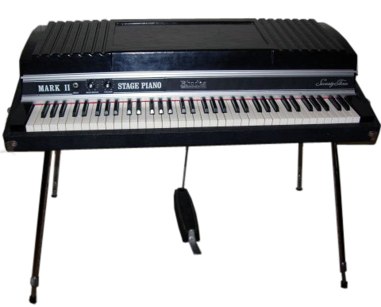

The Moog company pioneered the commercial manufacture of modular voltage-controlled analog synthesizer systems in the early 1950's.
|  |
The Rhodes piano is an electro-mechanical piano. invented by Harold Rhodes during the fifties and later manufactured in a number of models.... |
$1400 |
Fender Mustang
The Fender Mustang was introduced in 1964 as the basis of a major redesign of fenders.....
Fender Stratocaster
The Fender Stratocaster or "Strat" is one of the most popular electric guitars of all time ....
Gibson Les Paul
The Gibson Les Paul is a solid body electric guitar that was first sold in 1952 ...
Fender Stratocaster
The fender stratocaster or "Strat" is one of the most popular electric guitars of all time, and its design was copied by many guitar makers. It was designed by Leo..
Gibson Les Paul
The Gibson Les Paul is a solid body electric guitar that was first sold in 1952. The Les Paul was designed by Ted McCarthy....